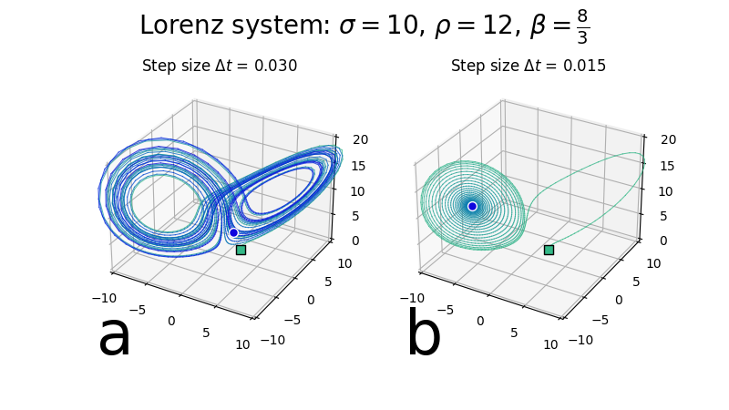

Rate conflation in the Lorenz system

A typical butterfly attractor can be simulated in the Lorenz system with a step size of 0.03 and a set of parameters that, when simulated with sufficiently small step size (0.015), leads to a quiescent point.
We can reproduce the classic butterfly morphology at a set of parameters that would normally lead to a quiescent settled state, just by using a larger step size.